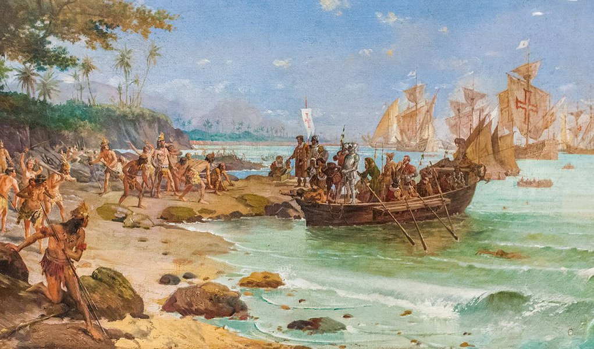
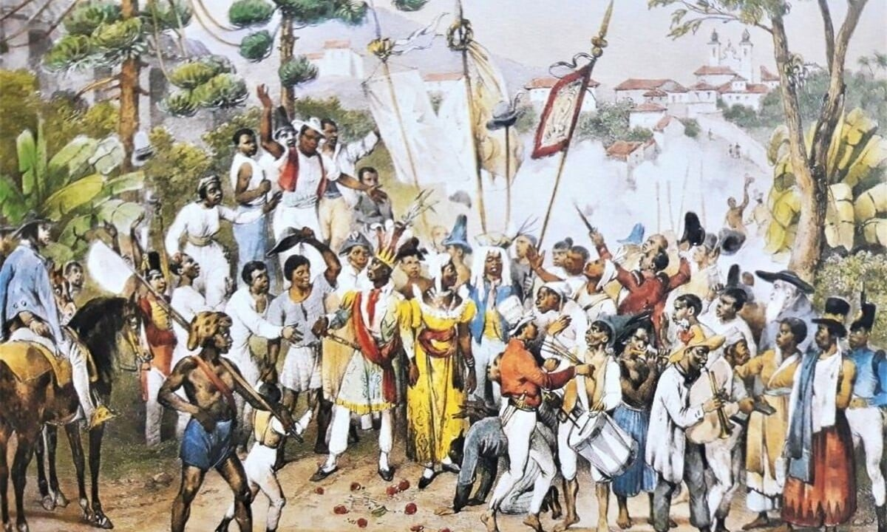

|  |
A Coroa dos dias de hoje são as megacorporações multinacionais, os grandes bancos e o rentismo. Essa nova Coroa é mais forte e maior que os Estados nacionais. Hoje em dia, é o poder econômico organizado que domina países. E o governo do país dominado se entrega completamente. E, por vezes, agradece ajoelhado. Para fora, o governo esquece sua independência. Uma suposta orientação de soberania nacional desaparece das possibilidades. Para dentro, somente toma decisões para favorecer a nova Coroa em confronto direto com os interesses de suas populações, tal como era no período colonial do passado. |
|  | Leitu ra imprescindível, fruto de um extenso trabalho de pesquisa, os volumes I e II de Escravidão (o volume III e último está previsto de sair no ano que vem), do escritor e jornalista Laurentino Gomes, lançados pela Globo Livros, têm passagens que r... Leia mais em Clique no link . O conteúdo de CartaCapital está protegido pela legislação brasileira sobre direito autoral. Essa defesa é necessária para manter o jornalismo corajoso e transparente de CartaCapital vivo e acessível a todos |